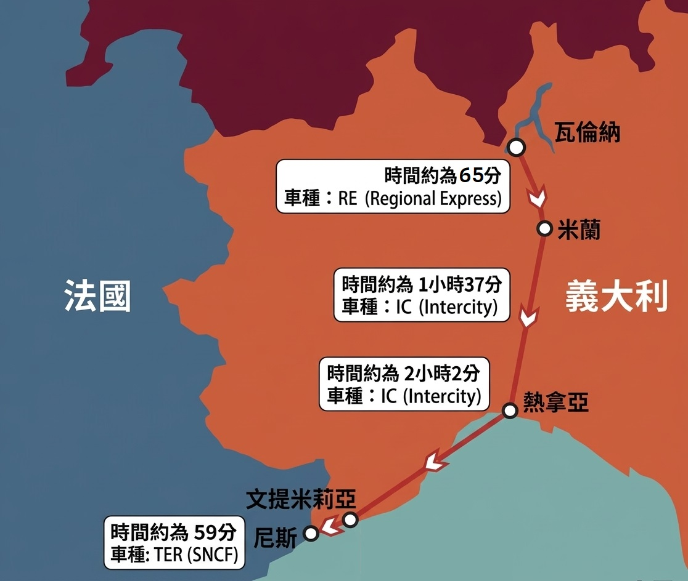
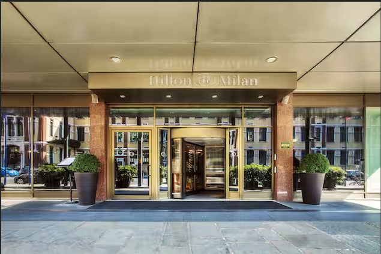
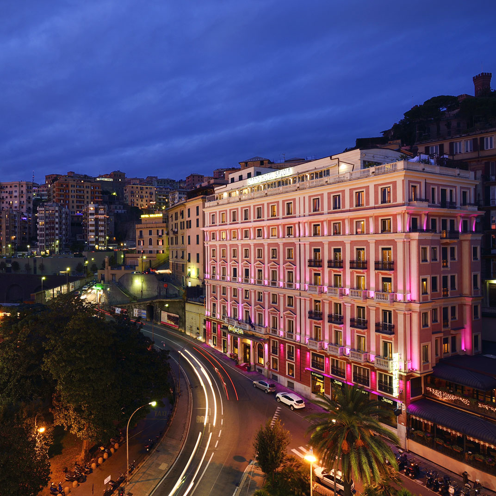
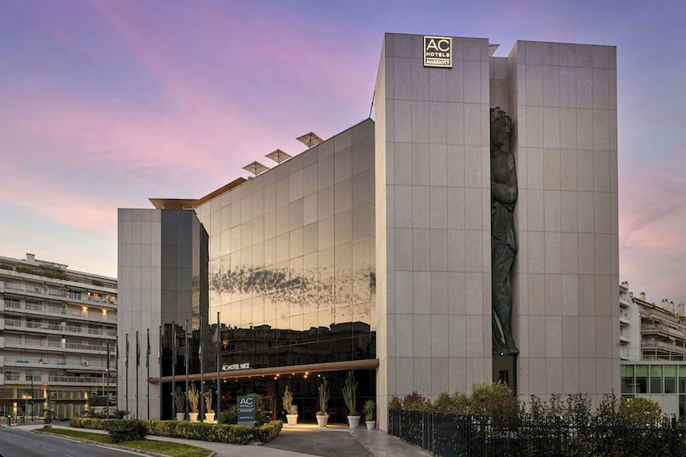

10/15 (四) · DAY 01
台北桃園國際機場 (TPE) ➔ 啟程出發
T2 報到EK367深夜起飛
- 晚間抵達桃園國際機場第二航廈 (Terminal 2) 阿聯酋航空櫃檯辦理報到與託運。
- **23:50** 搭乘阿聯酋航空 EK367 航班起飛，經杜拜轉機飛往米蘭。
台北 ➔ 杜拜 ➔ 米蘭 (4晚慢遊) ➔ 熱那亞 (3晚) ➔ 文提米利亞 ➔ 尼斯 (5晚慢活收尾)。以 4-3-5 熟齡慢活配置，減少換飯店、避免趕景點，每天保留休息與彈性時間。
改以時尚米蘭為核心樞紐，連住 4 晚以米蘭為基地，安排低強度市區與近郊慢遊；再於熱那亞連住 3 晚，加入完整休息日，最後尼斯連住 5 晚，讓南法行程以海岸、咖啡、短程火車與充分留白收尾。
以「少走一點、坐多一點、看深一點」為核心：每天以 1 個主景點＋1 個輕鬆區域為上限，優先利用火車、地鐵、纜車與電梯，避免連續上下坡；午餐後保留休息時段，並讓每天都有可直接取消的彈性行程。
以火車為主軸，米蘭、熱那亞、尼斯各自連住，近郊採半日或低強度一日遊；避免連續爬坡與長距離步行。

精選航班時間，順暢銜接杜拜轉機，展開意法山海慢旅。
精選大教堂、湖畔小鎮、港都歷史與海灣風景；刪去必須長時間爬坡的景點，改以舒適觀景為主。

哥德式建築的極致，鳥瞰全城視野

Città Alta 中世紀古城、威尼斯城牆與老廣場

絕美湖光山色與古典貴族莊園

羅利宮殿群與航海歷史底蘊

Promenade des Anglais 英國人散步大道
從米蘭鬱金香燉飯、貝爾加莫方餃，到熱那亞青醬與尼斯海鮮。
Ossobuco & Risotto alla Milanese：鬱金香的黃與軟嫩牛肉的極致組合。
夾入肉餡、鼠尾草與焦香奶油的古典北義美味。
Risotto al Filetto di Pesce Persico：鮮甜鱸魚配上香濃奶油燉飯。
Trofie al Pesto：青醬發源地，純粹的羅勒與帕馬森起司香氣。
中途停靠享用的現炸海鮮與經典橄欖油佛卡夏麵包。
Bouillabaisse & Salade Niçoise：蔚藍海岸最經典的海鮮饗宴。
精簡住宿據點，減少換飯店次數；每天控制活動密度，優先選擇火車、地鐵、纜車與電梯，避免長距離步行。

Hilton Milan
米蘭核心基地，方便前往市區與當日往返貝爾加莫、科莫湖。

Grand Hotel Savoia
靠近車站與舊港區，連住 3 晚，方便安排一整天留白休息。

AC Hotel Nice/ 海景飯店
位於英國人散步大道核心地段，延長停留享受南法陽光。
每日控制在 1 個主景點＋1 個輕鬆區域，優先火車與短程交通；午間休息、下午留白，讓 4-3-5 基地真正發揮慢旅效果。